The first years
Sussex opened in October 1961 to fifty-two students in the arts, housed in two Victorian buildings on Preston Road in Brighton while the campus at Falmer was built. From that small beginning the university grew quickly, putting into practice the ideas that had brought it into being and, within a few years, earning a national reputation as the most talked-about of the new universities.
From Preston Road to Falmer
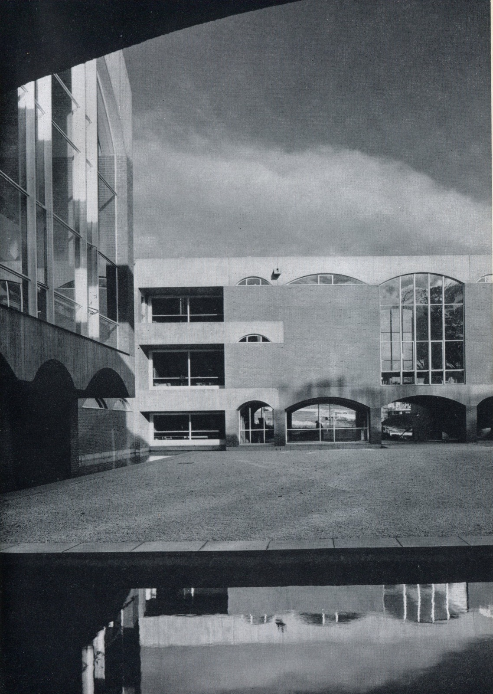
The university moved onto the Falmer site as Basil Spence’s buildings came into use, and the schools of study, Social Studies, European Studies, English and American Studies, and Physical Sciences, took shape, with African and Asian Studies added in 1964. In November 1964 Queen Elizabeth II opened the library, and the installation of the Chancellor was marked with due ceremony. The early intakes were small enough to sustain the sense of community the founders had wanted.
Sussex drew students from across the country rather than from its region, by design: it was conceived as a national university, set a few miles from Brighton so that members might think, in Fulton’s phrase, ‘upon problems for whose solution another perspective, another time-scale is needed’.
In the seven new universities, however, actions will speak louder than words. They will be called upon not only to plan but to create. Together they will provide only a relatively small share of the new university places the community can draw upon, but the way in which they develop will have repercussions on all existing universities, including Oxford and Cambridge. Asa Briggs, ‘Challenge of the Seven New Universities’
Schools, not departments
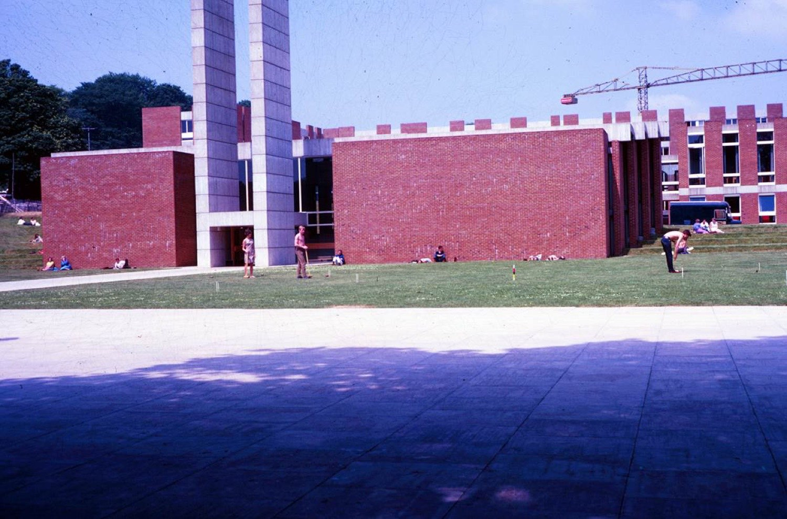
Teaching at Sussex was built on the small-group tutorial. Each undergraduate met a tutor weekly in groups of no more than five, learning by writing and by argument; lectures were ancillary and largely voluntary. A common first part gave way to study in one of the schools, where a major discipline was read alongside contextual subjects so that fields illuminated one another.
The arts degree was modelled on Oxford’s Modern Greats; in the sciences, fields were combined, as in biophysics. The principle was the interdependence rather than the independence of subjects, and it gave the early university an intensity of contact between students and staff that observers often remarked upon.
Institutes and the research ethos
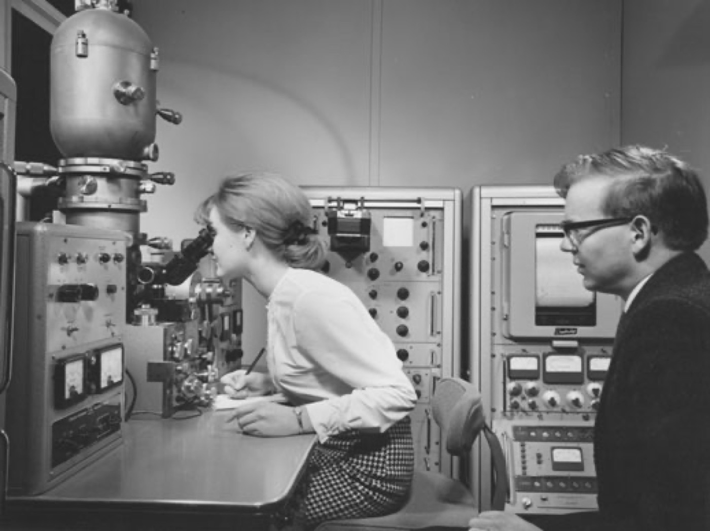
Sussex was never meant to be a teaching institution alone. From the outset research was central to its idea, and much of the innovation of the early years was led by faculty rather than by students. The Institute of Development Studies was located at Sussex in 1965, ahead of an Oxford bid for it, and the Science Policy Research Unit (SPRU) was founded in 1966. These institutes set the pattern for the interdisciplinary, internationally minded research that would carry the university’s reputation.
Life at a new university
The early Sussex was a sociable place, its common rooms and coffee bars as much a part of the experiment as its tutorials. The student body was deliberately diverse in background, and the campus, art, architecture, and all, was understood as part of the education on offer.
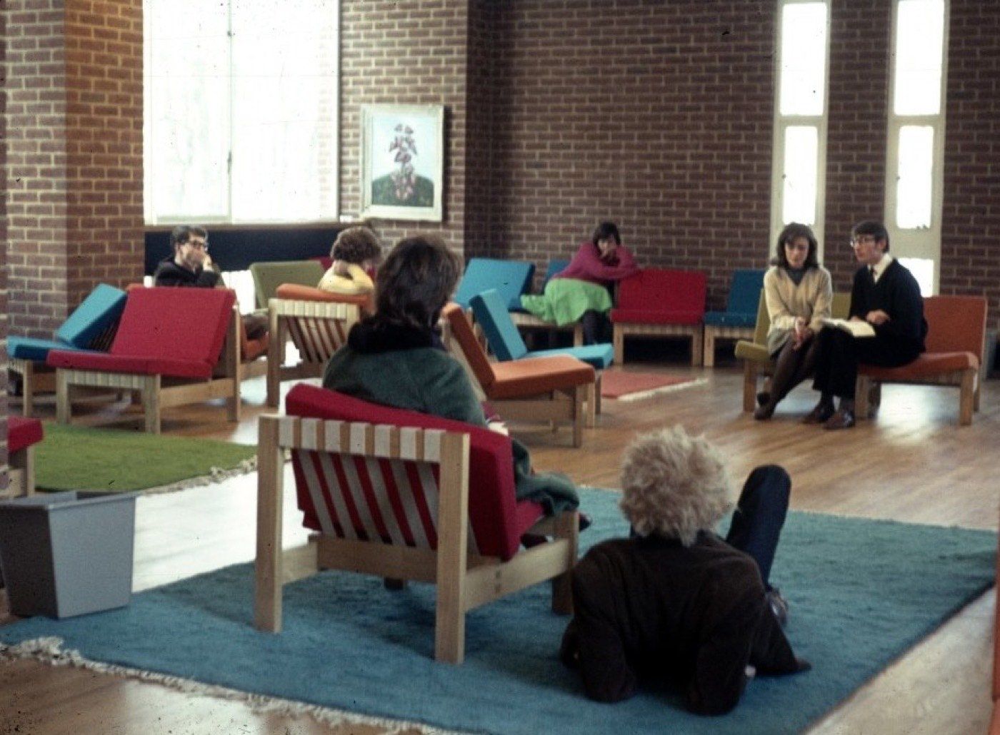
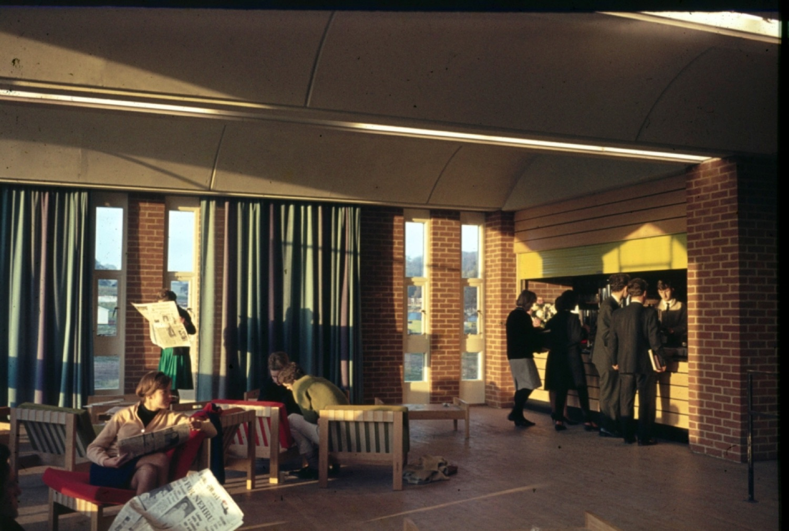
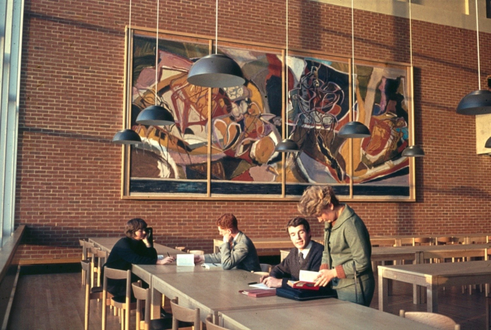
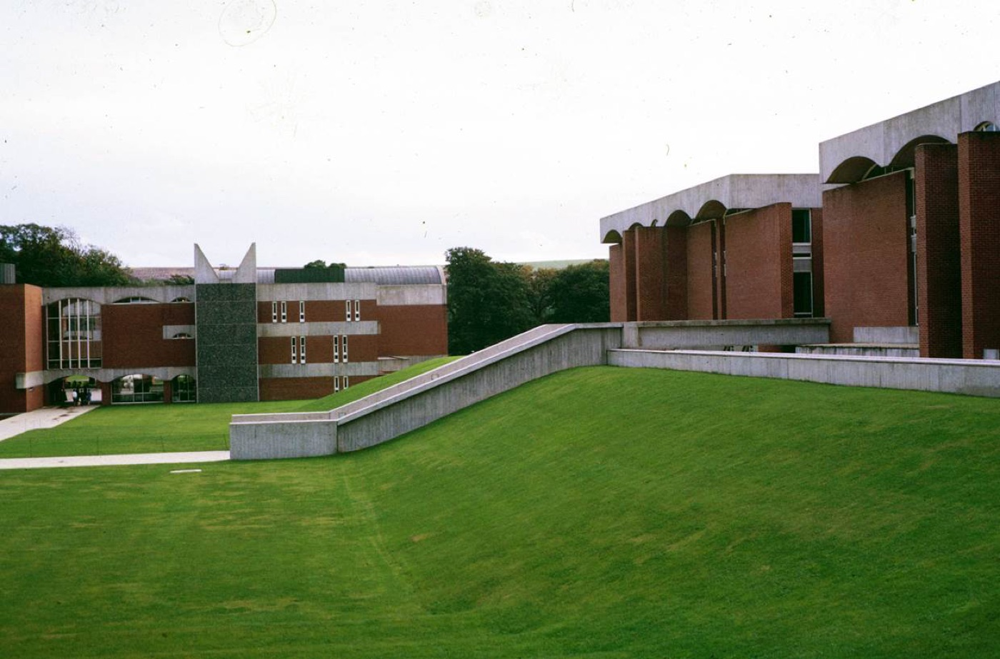
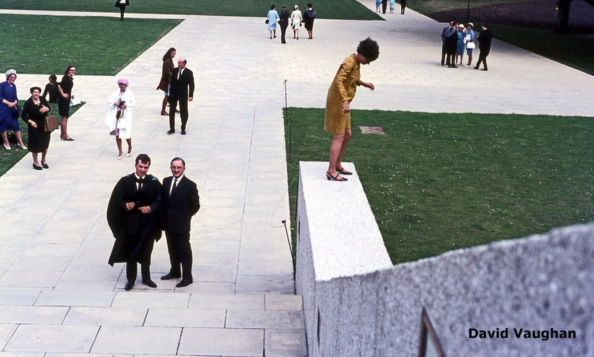
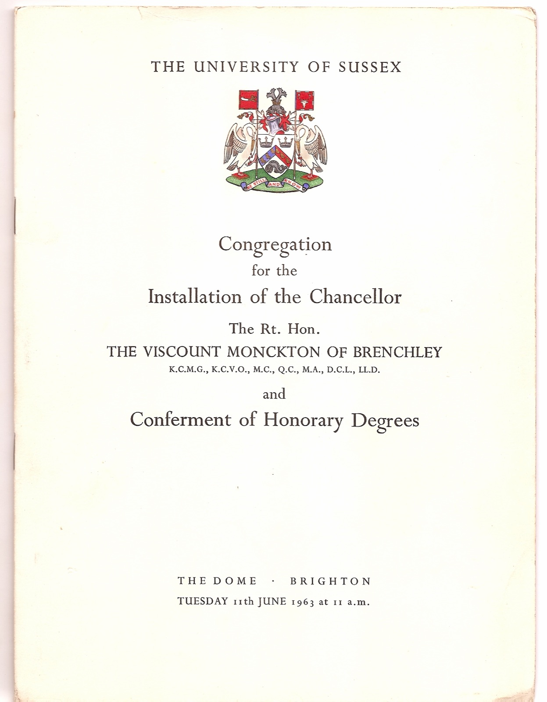
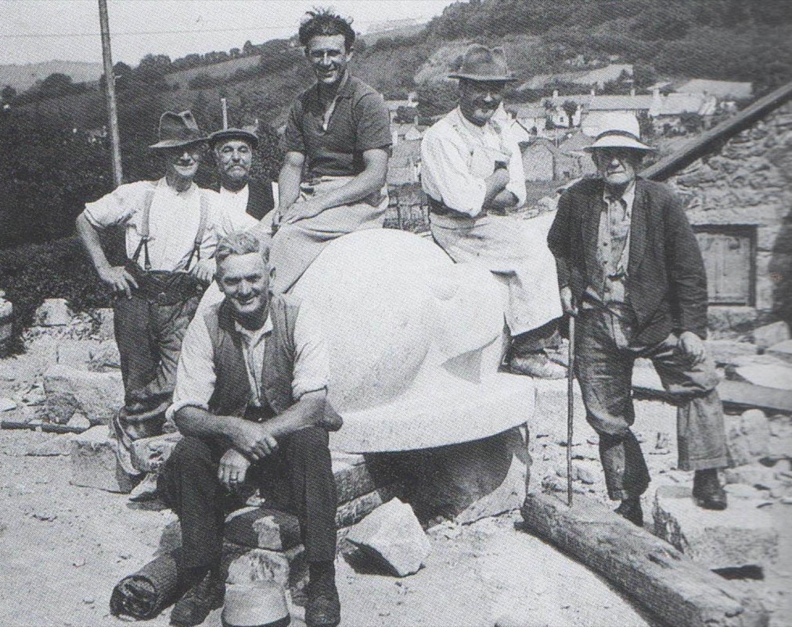
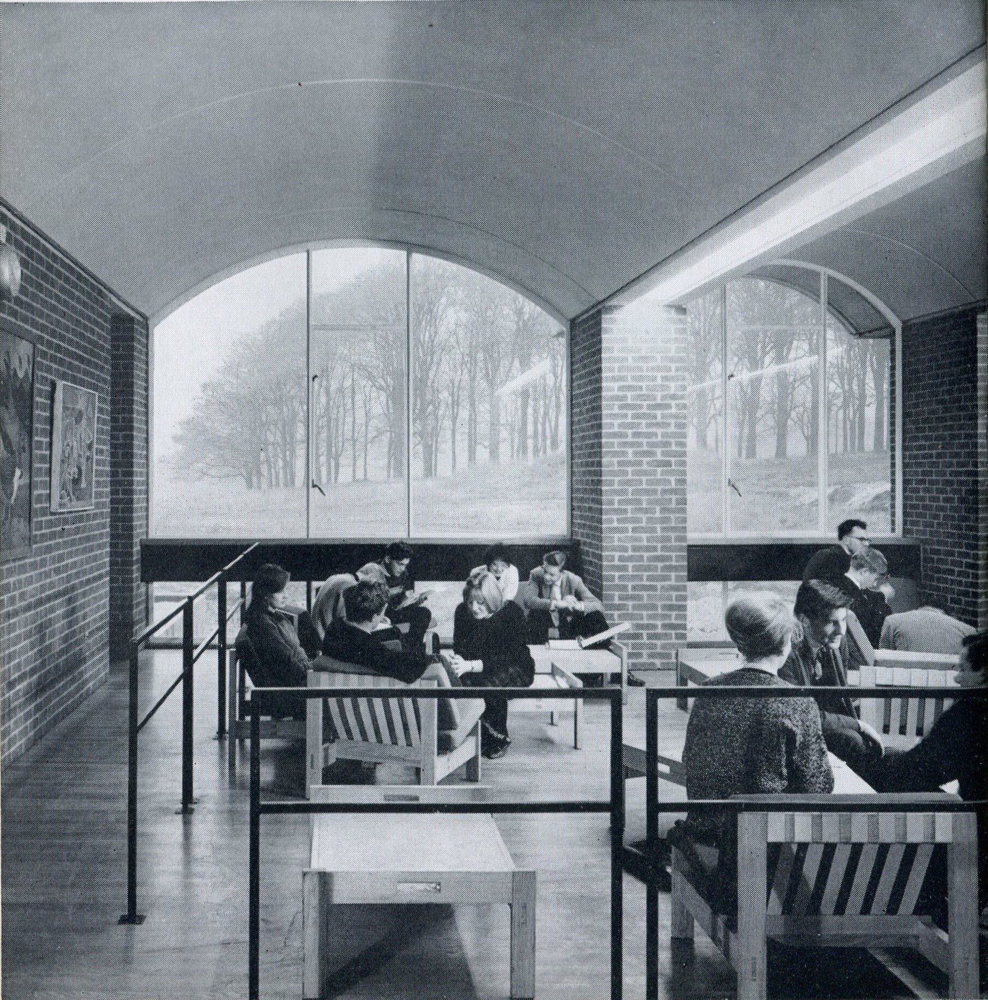
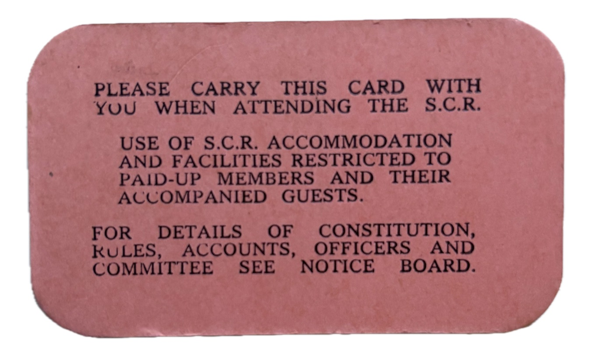
The closing of the Robbins parenthesis
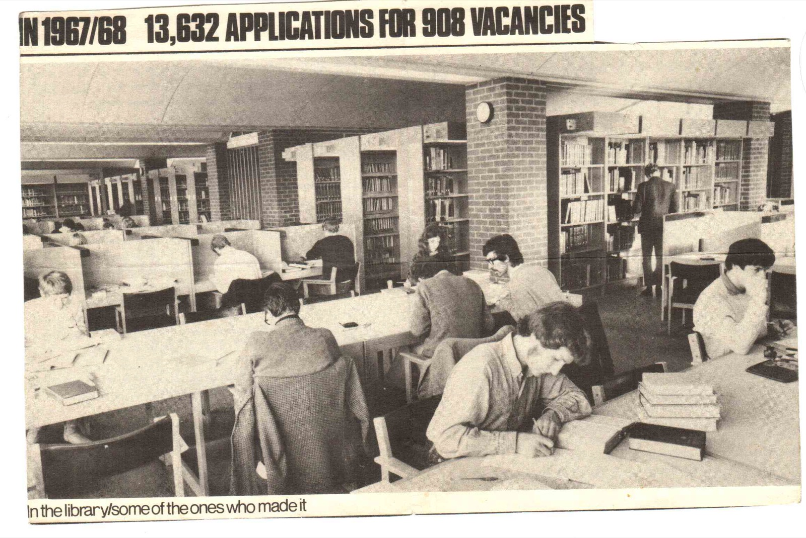
Fulton stood down in 1967 and Asa Briggs took over as Vice-Chancellor. By then the policy climate that had favoured the new universities, what Berry (2024) calls the ‘Robbins parenthesis’, was closing. A 1965 shift towards a binary system, and tighter funding from the University Grants Committee, forced Sussex to scale back its academic plans and to look elsewhere for development funds.
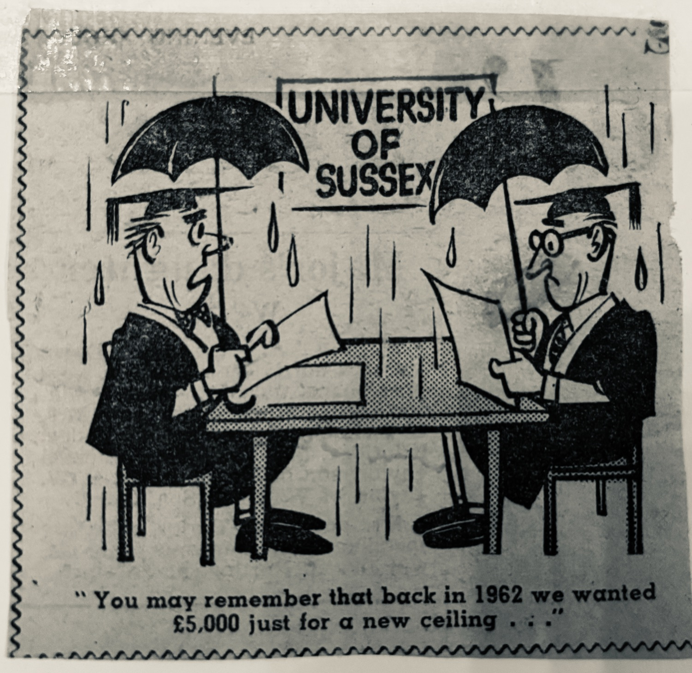
Student attitudes were also beginning to shift. The most famous incident came in 1968, when red paint was thrown over a spokesman for the United States embassy who had come to speak about the Vietnam War. Yet, as contemporaries noted, Sussex in the later 1960s was less radical in practice than its media image suggested. As the funding environment tightened, the university’s self-image as an experimental laboratory gave way to its place among the plate-glass universities, even as the questions that had brought it into being remained alive.
Briggs himself, reviewing the new universities towards the end of 1969, saw the drift from experiment toward conformity with unusual clarity:
The difference between Keele and the later batch of new universities were more than differences of historical period: they were differences of personnel. No later university had its Lindsay. It is a mistake to think that any new university starts with a tabula rasa. Its founders carry with them their previous experience. Much depends on the initial mix. A leading theme in the subsequent early history of new universities is the effect of recruitment of new intakes of academic faculty, many of them with highly specific qualifications, on the development of the initial guiding ideas, often very general ideas, about what the new university should be. … As the “system” has developed, it is not clear whether British universities regard themselves as partners or competitors. Recently there has been more talk of the need to keep in step than about the need to experiment, and organised students, who rightly figure far more prominently in the picture than they did when the new universities were founded, are more interested at present in generalising conditions in all universities than in the possibilities of reaching different answers to the same fundamental questions. In this situation the danger is that Oxford and Cambridge will continue to occupy a privileged position within the system whether they innovate or not. Asa Briggs, Focus: The News Magazine of the University of Sussex, No. 6, November 1969. JSTOR
Sources
This account draws on Berry (2024) and on contemporary accounts including Mackenzie’s ‘Starting a New University’ (1961), Trow’s ‘Notes from the Notebook of an Educational Anthropologist’ (1965), and Crouch’s The Student Revolt (1970). Full references are on the Sources page. Photographs are from the University of Sussex collections.